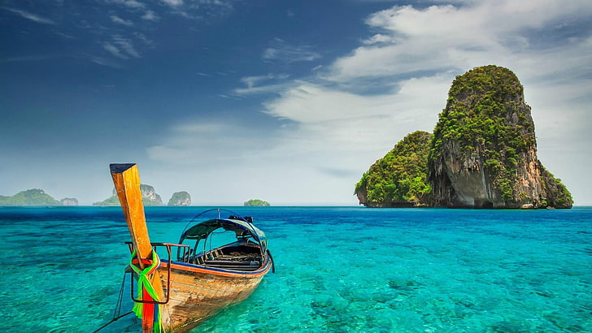
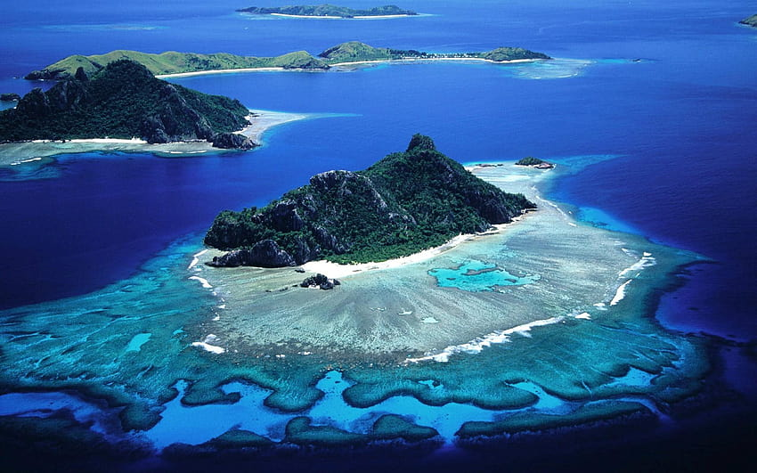
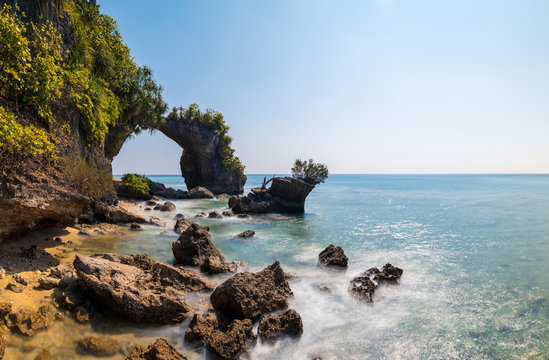
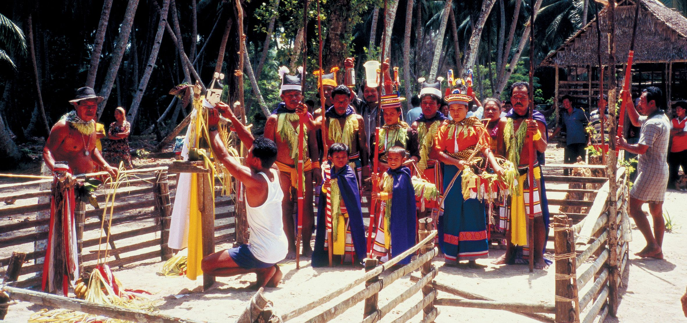
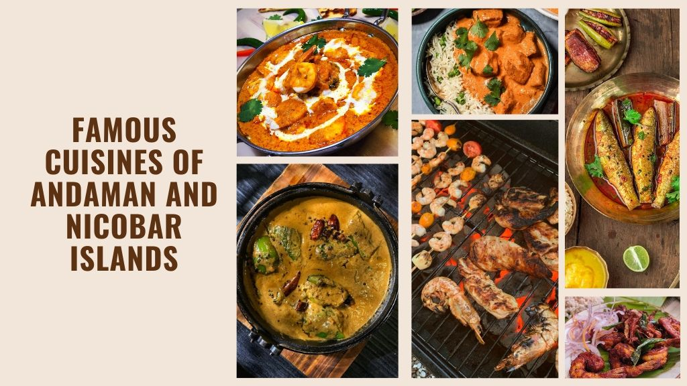

| ✧ Aspect | Information |
|---|---|
| ✧ Capital | Port Blair |
| ✧ Chief minister | not have a Chief Minister |
| ✧ Largest City | Port Blair |
| ✧ Districts | 3 |
| ✧ Official Language | Hindi, English |
| ✧ Other Language | Bengali, Tamil, Telugu, Malayalam, Nicobarese |
| ✧ Population | Approximately 400,000 |
| ✧ Area | Approximately 8,249 square kilometers |
| ✧ Major Rivers | no major rivers on the Andaman and Nicobar Islands. |
| ✧ Major Industries | Tourism, fisheries, agriculture (including coconut and palm oil cultivation), timber |
| ✧ Popular Place | Cellular Jail,Radhanagar Beach,Neil Island,Ross Island,Mount Harriet National Park |
Here are some common types of clothing in the Andaman and Nicobar Islands: Nicobarese Traditional Attire: Papoi: The "papoi" is a traditional dress commonly worn by Nicobarese women. It is a wrap-around skirt made from woven materials and is adorned with intricate designs.
The history of the Andaman and Nicobar Islands is a tale of both natural wonders and human struggles. These islands, situated in the Bay of Bengal, have a rich and diverse history dating back thousands of years. The earliest inhabitants of these islands were believed to be indigenous tribes, including the Great Andamanese, Onge, Jarawa, and Sentinalese, who lived in relative isolation for centuries.
During the colonial era, the Andaman and Nicobar Islands became a strategic location for European powers due to their geographical proximity to the trade routes of the Indian Ocean. The islands came under British control in the 18th century, and Port Blair, the present-day capital, was established as a penal colony by the British East India Company in 1858. The infamous Cellular Jail, built to incarcerate political prisoners and freedom fighters, stands as a grim reminder of this dark period in history.
The islands witnessed significant upheavals during World War II when they were occupied by the Japanese forces from 1942 to 1945. The Japanese occupation brought immense suffering to the local population and left lasting scars on the islands' landscape and people.
After India gained independence from British rule in 1947, the Andaman and Nicobar Islands became a union territory of India. Over the years, efforts have been made to integrate the indigenous tribes into the mainstream society while also preserving their unique cultural heritage and way of life.
Today, the Andaman and Nicobar Islands are known not only for their natural beauty and biodiversity but also for their vibrant cultural mosaic, shaped by centuries of diverse influences. The islands continue to attract tourists and researchers alike, drawn by their pristine beaches, lush forests, and fascinating history, making them a truly remarkable destination in the Indian Ocean.




